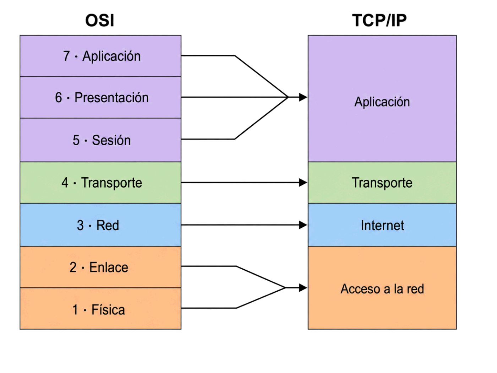
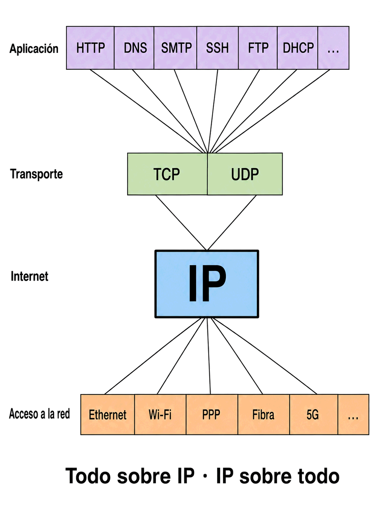

Contenido del día
1. De dónde sale TCP/IP
Hay un detalle que explica casi todo lo demás: TCP/IP es anterior a OSI. No es una alternativa que apareció después para simplificarlo; es al revés.
| Año | Qué pasó |
|---|---|
| 1969 | Arranca ARPANET, la red del Departamento de Defensa estadounidense |
| 1974 | Vinton Cerf y Robert Kahn publican el protocolo que acabará siendo TCP/IP |
| 1 de enero de 1983 | ARPANET cambia a TCP/IP en un solo día. Lo llamaron flag day |
| 1983 | Se distribuye con BSD Unix, gratis y con el código fuente |
| 1984 | La ISO publica el modelo OSI… cuando TCP/IP ya llevaba un año desplegado |
El 1 de enero de 1983 unos 400 equipos tuvieron que dejar de hablar el protocolo antiguo y empezar a hablar TCP/IP. No había forma de hacerlo gradualmente: quien no hubiera migrado, se quedaba fuera de la red.
Circularon chapas con el lema «I survived the TCP/IP transition». Da una idea de lo que cuesta cambiar algo que está en la base de todo: es exactamente el mismo problema que hoy frena IPv6, solo que ahora no son 400 equipos, sino miles de millones.
2. Las cuatro capas
TCP/IP describe lo mismo que OSI con cuatro capas en lugar de siete. No es que le falten tres: es que agrupa lo que en la práctica no se separa.
| Capa | De qué se ocupa | Protocolos |
|---|---|---|
| 4 · Aplicación | El servicio que la persona usa, con su formato y su diálogo | HTTP, DNS, SMTP, FTP, SSH, DHCP |
| 3 · Transporte | Entregar al programa correcto, trocear y, si toca, garantizar | TCP, UDP |
| 2 · Internet | Llevar el paquete de una red a otra: direccionamiento y ruta | IP, ICMP, ARP |
| 1 · Acceso a la red | Meter los bits en el medio concreto que haya | Ethernet, Wi-Fi, PPP |
Por eso, cuando alguien dice «un cortafuegos de capa 7» o «un switch de capa 3», se está refiriendo siempre a OSI. El vocabulario del día a día es el de OSI, aunque el protocolo que corre por debajo sea TCP/IP. Es la primera pista de por qué merece la pena saberse los dos.
La capa de acceso a la red es la más rara de las cuatro, porque TCP/IP no define nada ahí. No dice cómo son los cables, ni las tramas, ni las direcciones físicas.
No es un olvido: es la decisión de diseño más importante del modelo. Al no definir la capa de abajo, TCP/IP puede funcionar sobre cualquier cosa que ya exista o que se invente después: Ethernet, Wi-Fi, fibra, 5G, satélite. En 1974 no existía ninguna de las cuatro últimas, y aun así funcionan.
3. La correspondencia con OSI
Esta tabla cae en examen y conviene sabérsela en los dos sentidos.
| OSI | TCP/IP | Qué ocurre |
|---|---|---|
| 7 · Aplicación 6 · Presentación 5 · Sesión |
Aplicación | Tres capas de OSI se funden en una. En la práctica el mismo protocolo se ocupa del servicio, del formato y del diálogo |
| 4 · Transporte | Transporte | Correspondencia exacta, uno a uno |
| 3 · Red | Internet | Correspondencia exacta; solo cambia el nombre |
| 2 · Enlace 1 · Física |
Acceso a la red | Dos capas de OSI se funden en una, y además TCP/IP no define su contenido |
Arriba, OSI separa en tres lo que TCP/IP deja en una.
Abajo, OSI separa en dos lo que TCP/IP deja en una.
Si te sabes eso, la tabla la reconstruyes entera sin memorizarla.

OSI TCP/IP
┌──────────────┐
│ 7 Aplicación │ ─┐
├──────────────┤ │ ┌──────────────┐
│ 6 Presentac. │ ─┼──────► │ Aplicación │
├──────────────┤ │ └──────────────┘
│ 5 Sesión │ ─┘
├──────────────┤ ┌──────────────┐
│ 4 Transporte │ ────────► │ Transporte │
├──────────────┤ ├──────────────┤
│ 3 Red │ ────────► │ Internet │
├──────────────┤ ├──────────────┤
│ 2 Enlace │ ─┐ │ Acceso a │
├──────────────┤ ├──────► │ la red │
│ 1 Física │ ─┘ └──────────────┘
└──────────────┘4. Por qué ganó TCP/IP
A mediados de los ochenta parecía claro que el futuro era OSI: lo respaldaban la ISO, los gobiernos europeos y las grandes empresas de telecomunicaciones. Ganó TCP/IP. Merece la pena entender por qué, porque la explicación se repite constantemente en informática.
| TCP/IP | OSI | |
|---|---|---|
| Cómo nació | Escribiendo código que funcionaba y estandarizando después | Diseñando el modelo completo por comité antes de implementarlo |
| Coste | Gratis, con el código incluido en BSD Unix | Los documentos de la ISO se pagaban |
| Complejidad | Cuatro capas, protocolos sencillos | Siete capas, con dos (sesión y presentación) que casi nadie llegó a usar |
| Cuándo estuvo listo | Funcionando desde 1983 | Publicado en 1984; implementaciones completas, mucho más tarde |
| Quién lo empujó | Universidades, que ya lo tenían instalado | Gobiernos y operadoras, por decreto |
Es la frase con la que David Clark resumió en 1992 la filosofía de quienes desarrollaban Internet: «Rechazamos reyes, presidentes y votaciones. Creemos en el consenso aproximado y en el código que funciona.»
Frente a un comité que vota especificaciones, un grupo que escribe implementaciones y adopta la que funciona. El jueves verás cómo ese principio sigue siendo el procedimiento oficial para crear estándares de Internet.
OSI perdió como conjunto de protocolos —nadie usa hoy sus protocolos— pero ganó como vocabulario. Toda la industria describe los aparatos, los problemas y los productos con sus siete capas.
Un switch «de capa 2», un cortafuegos «de capa 7», un problema «de capa 1»: todo eso es OSI. Nadie dice «un switch de capa de acceso a la red».
Se estudian los dos porque se usan los dos, cada uno para una cosa: TCP/IP para funcionar, OSI para hablar.
5. El reloj de arena: IP en la cintura
Si se dibuja la familia de protocolos por capas y se cuenta cuántos hay en cada nivel, sale una forma muy característica:

Aplicación HTTP DNS SMTP SSH FTP DHCP ... ← muchísimos
\ \ | / /
Transporte TCP UDP ← dos
\ /
Internet IP ← UNO
/ \
Acceso Ethernet Wi-Fi PPP fibra 5G ... ← muchísimosEsa estrechez es justo lo que hace que funcione. Como todo pasa por IP, cualquier aplicación nueva funciona sobre cualquier red existente sin que nadie tenga que ponerse de acuerdo. El día que se inventó el Wi-Fi no hubo que tocar los navegadores.
Por eso IPv6, que se publicó en 1998, sigue conviviendo con IPv4 casi treinta años después. Cambiar un protocolo de aplicación es fácil: afecta a quien lo use. Cambiar el de la cintura obliga a mover, a la vez, todo lo de arriba y todo lo de abajo.
Es el flag day de 1983 otra vez, pero a escala planetaria. Y esta vez no cabe hacerlo en un día.
6. El mapa de protocolos
Casi todos los protocolos que has visto en tres semanas caben en esta tabla. Vale la pena mirarla despacio: es el resumen de lo que llevas de curso.
| Capa TCP/IP | Protocolo | Para qué sirve | Encima de |
|---|---|---|---|
| Aplicación | HTTP | Web | TCP · 80 y 443 |
| DNS | Traducir nombres a direcciones IP | UDP · 53 | |
| SMTP | Enviar correo | TCP · 25 | |
| SSH | Administrar equipos a distancia | TCP · 22 | |
| DHCP | Repartir configuración de red | UDP · 67 y 68 | |
| Transporte | TCP | Entrega garantizada y en orden | IP |
| UDP | Entrega rápida, sin garantías | IP | |
| Internet | IP | Direccionar y encaminar | La capa de acceso |
| ICMP | Mensajes de control y error: es lo que usa ping | IP | |
| ARP | Averiguar la MAC que corresponde a una IP | Directamente sobre Ethernet | |
| Acceso a la red | Ethernet | Red local por cable | El medio físico |
| Wi-Fi | Red local sin cables | El aire |
DNS va sobre UDP, no sobre TCP, aunque sea un servicio importantísimo. Tiene sentido: una consulta y una respuesta cortas, y si se pierde se repite. Montar una conexión TCP para eso costaría más que la propia consulta.
ARP no encaja del todo en ninguna capa. Se le suele situar en la de internet porque trabaja con direcciones IP, pero no viaja dentro de IP: va directamente dentro de una trama Ethernet. Es un protocolo que vive justo en la frontera entre las dos capas, y por eso los libros no se ponen de acuerdo sobre dónde ponerlo.
7. El modelo híbrido de cinco capas
Como OSI tiene tres capas de arriba que casi nadie separa y TCP/IP tiene una capa de abajo que agrupa dos cosas muy distintas, en la práctica se usa mucho un modelo intermedio de cinco capas:
| Modelo híbrido | Viene de | Por qué |
|---|---|---|
| 5 · Aplicación | TCP/IP | Sesión y presentación se dejan fundidas, como en la realidad |
| 4 · Transporte | Los dos | Igual en ambos |
| 3 · Red | Los dos | Igual en ambos |
| 2 · Enlace | OSI | Se recupera la separación: el cable y la trama son cosas distintas |
| 1 · Física | OSI | Igual |
No es un modelo oficial de ningún organismo. Es lo que usan la mayoría de los libros y de los profesionales porque es lo que resulta útil.
8. Resumen y errores frecuentes
- TCP/IP es anterior a OSI: 1983 frente a 1984, y con implementación real desde el principio.
- Cuatro capas: acceso a la red, internet, transporte y aplicación.
- Correspondencia: las dos del medio son idénticas; arriba OSI separa en tres, abajo separa en dos.
- TCP/IP no define su capa de acceso, y por eso funciona sobre cualquier tecnología, incluidas las que aún no existían.
- Ganó por ser gratis, sencillo y estar ya funcionando, no por ser oficial.
- OSI sobrevive como vocabulario: «switch de capa 2», «cortafuegos de capa 7».
- Reloj de arena: muchos protocolos arriba, muchas tecnologías abajo, y solo IP en la cintura.
- Esa cintura explica a la vez el éxito de Internet y la lentitud de IPv6.
- DNS va sobre UDP; ARP no viaja dentro de IP.
Errores frecuentes
| Se dice… | …pero en realidad |
|---|---|
| «TCP/IP simplificó OSI» | Al revés: TCP/IP es anterior. OSI llegó después |
| «A TCP/IP le faltan capas» | No le faltan: agrupa lo que en la práctica no se separa |
| «Capa 4 es transporte» | En OSI sí; en TCP/IP la 4 es la de aplicación |
| «OSI no sirve para nada» | Es el vocabulario de toda la industria |
| «TCP/IP define Ethernet» | No define nada de su capa de acceso, y eso es una ventaja |
| «TCP e IP son un solo protocolo» | Son dos, en capas distintas. El nombre junta los dos más conocidos de la familia |
| «DNS usa TCP porque es importante» | Usa UDP: consultas cortas en las que montar una conexión costaría más que preguntar |
| «IPv6 no se despliega por pereza» | Está en la cintura del reloj: cambiarlo obliga a mover todo lo de arriba y lo de abajo a la vez |
9. Repaso con flashcards
Piensa la respuesta antes de girar la tarjeta.
Quiz del día
14 preguntas · 22 minutos · Contesta sin volver a la teoría
El cronómetro no corre mientras lees: arranca al llegar aquí, al pulsar «Empezar quiz» o al marcar tu primera respuesta.
Resultados
Respuestas correctas: 0 / 0
Respuestas incorrectas: 0
Vas a recorrer las cuatro capas de TCP/IP en una sola petición web: la consulta DNS, la conexión TCP con su puerto efímero, la dirección IP a la que se llega y las cabeceras HTTP. Todo con comandos que ya tienes instalados.
→ Ir al laboratorio del Día 3 (62 min)
Normalización: quién decide cómo son los protocolos. ISO, IEEE, IETF y los RFC. Y el estreno de Wireshark, con el que verás por fin los bytes de verdad de una trama.
Tarea de calentamiento (5 min): si nadie manda en Internet, ¿quién decide que el puerto de la web sea el 80?